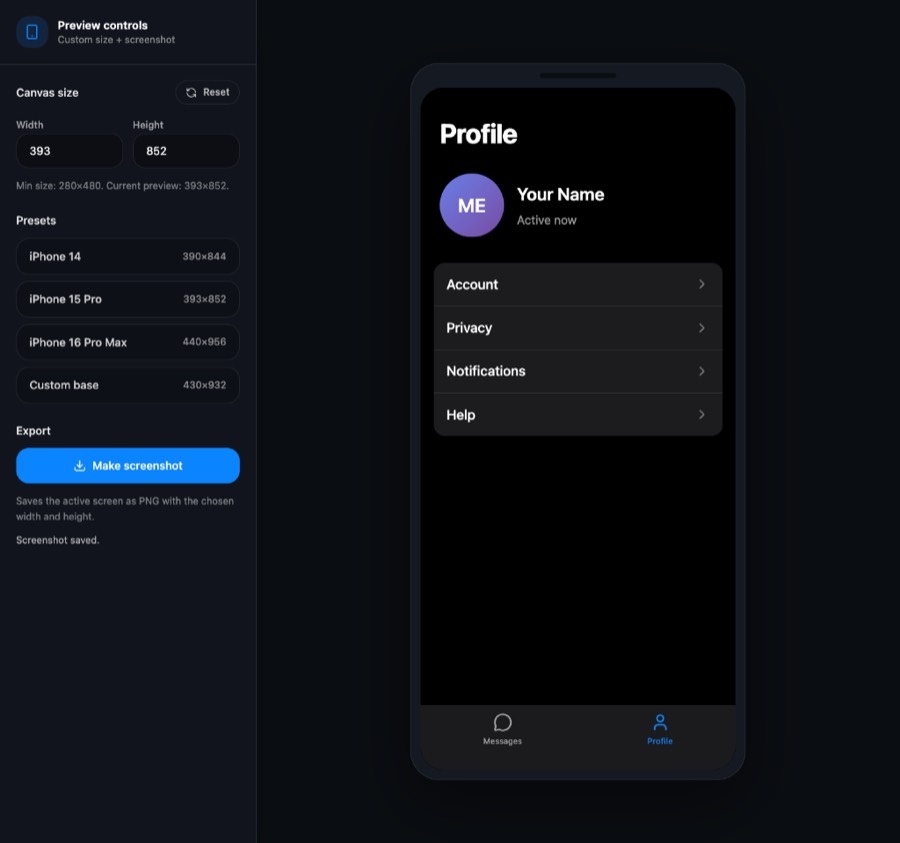

Solo building: why I skipped Figma and built iOS components for the web
Solo building: why I skipped Figma and built iOS components for the web
The problem with design tooling when you're solo
When you're building alone, design starts to feel like overhead.
You open Figma, spend time laying out screens, then manually translate everything into code. Two layers, two sources of truth, two things to maintain. For a solo developer, that friction compounds fast.
At some point I stopped asking how do I design this properly and started asking — why am I designing it at all before writing it?
A different approach
The idea is simple: skip the design tool entirely.
Instead of designing iOS screens in Figma and then porting them to code, I built iOS-like UI components directly in shadcn — so prototyping happens in the browser from day one.
The result is ios-web-shadcn — a set of components that replicate iOS UI patterns using Tailwind CSS and shadcn primitives.

The prototype is the code
Rebuilding iOS-like components in shadcn is faster than you'd expect. The primitives are already there — layout, typography, color tokens. You're just composing them with familiar iOS patterns: rounded search bars, avatar rows, tab bars, nav titles.
And since it's all just React + Tailwind, the prototype is the code. There's no gap between what you designed and what you ship.
This also pairs well with AI tools — you can describe a screen and get working iOS-style components immediately, without leaving your editor or waiting for a Figma export.
The registry
The components live in the ton-design-system registry and can be copied into any shadcn project via the CLI.
If you're building solo — especially mobile-first apps — it might be worth trying. Design in the browser, skip the translation layer.
First published March 15, 2026 on the old Viper Foundation blog; moved here November 19, 2026. All posts